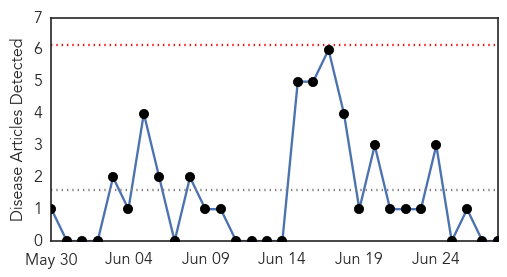

MERS
30-Day Web Trend
0 alerts, 0 warnings

30-Day Twitter Trend
0 alerts, 0 warnings

Article Locations

Article Confidences

Top Articles:
- 0.999
- Mers emerging health concern
- 0.993
- Saudi Arabia reports increase in MERS cases
- 0.980
- Camels imports are linked to deadly Mers virus
- 0.947
- Camel imports spreading Mers virus – S. Arabia
- 0.875
- Saudi Arabia suspects African camel imports in MERS outbreak
- 0.843
- Killer virus ‘made leap from camels to humans’
Top Tweets:
-
No tweets found for Jun 28, 2014
Meningitis
30-Day Web Trend
0 alerts, 0 warnings

30-Day Twitter Trend
0 alerts, 0 warnings

Article Locations

Article Confidences

Top Articles:
-
No articles found for Jun 28, 2014
Top Tweets:
-
No tweets found for Jun 28, 2014